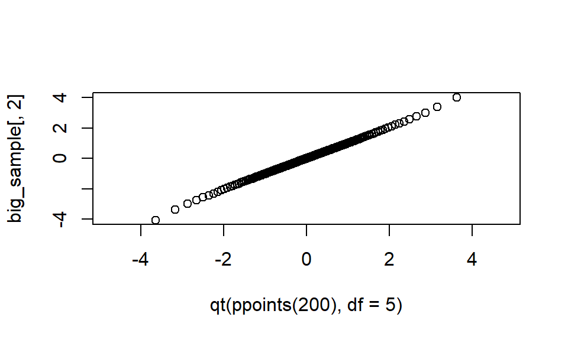

Chapter 8 Case study: Cronbach Alpha
In this section we walk through the case study of Cronbach Alpha to illustrate the filling out of the code skeleton we get from simhelpers’s create_skeleton() package.
We first create the skeleton, and then start filling in the pieces.
library( simhelpers )
create_skeleton()8.1 Data-generating model
The first two sections in the skeleton are about the data-generating model:
rm(list = ls())
#------------------------------------------------------
# Set development values for simulation parameters
#------------------------------------------------------
# What are your model parameters?
# What are your design parameters?
#------------------------------------------------------
# Data Generating Model
#------------------------------------------------------
dgm <- function(model_params) {
return(dat)
}
# Test the data-generating model - How can you verify that it is correct?Here, we need to create and test a function that takes model parameters (and sample sizes and such) as inputs, and produces a simulated dataset. For the Cronbach alpha simulation, the function looks like this:
library(mvtnorm)
rm(list = ls())
#------------------------------------------------------
# Set development values for simulation parameters
#------------------------------------------------------
# model parameters
alpha <- 0.73 # true alpha
df <- 12 # degrees of freedom
# design parameters
n <- 50 # sample size
p <- 6 # number of items
#------------------------------------------------------
# Data Generating Model
#------------------------------------------------------
r_mvt_items <- function(n, p, alpha, df) {
icc <- alpha / (p - alpha * (p - 1))
V_mat <- icc + diag(1 - icc, nrow = p)
X <- rmvt(n = n, sigma = V_mat, df = df)
colnames(X) <- LETTERS[1:p]
X
}
# Test the data-generating model
big_sample <- r_mvt_items(n = 100000, p = 4, alpha = 0.73, df = 5)
round(cor(big_sample), 3) # looks good## A B C D
## A 1.000 0.406 0.411 0.406
## B 0.406 1.000 0.403 0.400
## C 0.411 0.403 1.000 0.405
## D 0.406 0.400 0.405 1.000qqplot(qt(ppoints(200), df = 5), big_sample[,2], ylim = c(-4,4))
8.2 Estimation procedures
The next section of the template looks like this:
#------------------------------------------------------
# Model-fitting/estimation/testing functions
#------------------------------------------------------
estimate <- function(dat, design_params) {
return(result)
}
# Test the estimation functionHere, we need to create a function that takes simulated data as input (and possibly also design parameters, like sample size), and produces a set of estimates (or confidence intervals, or p-values, etc.). As usual, we should also test that the function is correct.
Here’s what this code looks like for the Cronbach alpha simulation:
#------------------------------------------------------
# Model-fitting/estimation/testing functions
#------------------------------------------------------
estimate_alpha <- function(dat, coverage = .95) {
V <- cov(dat)
p <- ncol(dat)
n <- nrow(dat)
A <- p / (p - 1) * (1 - sum(diag(V)) / sum(V))
Var_A <- 2 * p * (1 - A)^2 / ((p - 1) * n)
B <- log(1 - A) / 2
SE_B <- sqrt(p / (2 * n * (p - 1)))
z <- qnorm((1 - coverage) / 2)
CI_B <- B + c(-1, 1) * SE_B * z
CI_A <- 1 - exp(2 * CI_B)
data.frame(A = A, Var_A = Var_A, CI_L = CI_A[1], CI_U = CI_A[2])
}
# Test the estimation function
small_sample <- r_mvt_items(n = 50, p = 6, alpha = 0.73, df = 5)
estimate_alpha(small_sample)## A Var_A CI_L CI_U
## 1 0.6776348 0.004988126 0.5047357 0.7901741The function takes a simulated dataset as input and spits out a point estimate of alpha, an estimate of the variance of alpha, and a confidence interval for alpha (at the 95% coverage level, by default).
We’ve already seen how to use the replicate function to generate a whole bunch of simulated estimates:
alpha_sims <-
replicate(n = 10, {
dat <- r_mvt_items(n = 50, p = 6, alpha = 0.73, df = 5)
estimate_alpha(dat)
}, simplify = FALSE) %>%
bind_rows()
alpha_sims## A Var_A CI_L CI_U
## 1 0.7376881 0.0033027608 0.5969983 0.8292625
## 2 0.5774827 0.0085690016 0.3508674 0.7249855
## 3 0.6474001 0.0059676806 0.4582847 0.7704944
## 4 0.2444404 0.0274017727 -0.1608006 0.5082099
## 5 0.7237283 0.0036636500 0.5755512 0.8201761
## 6 0.7341302 0.0033929646 0.5915321 0.8269466
## 7 0.7961477 0.0019946770 0.6868124 0.8673135
## 8 0.5563208 0.0094488599 0.3183554 0.7112113
## 9 0.8823696 0.0006641713 0.8192791 0.9234350
## 10 0.6132132 0.0071809934 0.4057618 0.74824238.3 Performance calculations
The next section of the template deals with performance calculations:
#------------------------------------------------------
# Calculate performance measures
# (For some simulations, it may make more sense
# to do this as part of the simulation driver.)
#------------------------------------------------------
performance <- function(results, model_params) {
return(performance_measures)
}
# Check performance calculationsThe performance() function takes as input a bunch of simulated data (which we might call results) and the true values of the model parameters (model_params) and returns as output a set of summary performance measures. As noted in the comments above, for simple simulations it might not be necessary to write a separate function to do these calculations. For more complex simulations, though, it can be helpful to break these calculations out in a function.
For the Cronbach alpha simulation, we might want to calculate the following performance measures:
- bias and root mean-squared error (RMSE) of the alpha point estimate
- relative bias of the variance estimator
- coverage of the confidence interval
Here is a function that calculates these measures (along with Monte Carlo standard errors), given a data frame containing model results. It uses the jackknife technique to get Monte Carlo standard errors for the RMSE and relative bias.
#------------------------------------------------------
# Calculate performance measures
#------------------------------------------------------
alpha_performance <- function(alpha_sims, alpha, coverage_level = .95) {
# setup
K <- nrow(alpha_sims)
A_err <- alpha_sims$A - alpha
var_A <- var(alpha_sims$A)
# bias
A_bias <- mean(A_err)
A_bias_MCSE <- sqrt(var_A / K)
# RMSE
A_RMSE <- sqrt(mean((A_err)^2))
RMSE_j <- sqrt((A_RMSE^2 * K - A_err^2) / (K - 1))
A_RMSE_MCSE <- sd(RMSE_j)
# relative bias of variance estimator
V_bar <- mean(alpha_sims$Var_A)
V_j <- (V_bar * K - alpha_sims$Var_A) / (K - 1)
Ssq_j <- ((K - 1) * var_A - A_err^2 * K / (K - 1)) / (K - 2)
RB_j <- V_j / Ssq_j
V_relbias <- V_bar / var_A
V_relbias_MCSE <- sd(RB_j)
# coverage
coverage <- mean(alpha_sims$CI_L < alpha & alpha < alpha_sims$CI_U)
coverage_MCSE <- sqrt(coverage_level * (1 - coverage_level) / K)
data.frame(
criterion = c("alpha bias","alpha RMSE", "V relative bias", "coverage"),
est = c(A_bias, A_RMSE, V_relbias, coverage),
MCSE = c(A_bias_MCSE, A_RMSE_MCSE, V_relbias_MCSE, coverage_MCSE)
)
}
# Check performance calculations
alpha_performance(alpha_sims, alpha = 0.73)## criterion est MCSE
## 1 alpha bias -0.07870788 0.05531869
## 2 alpha RMSE 0.18367458 0.02678076
## 3 V relative bias 0.23393085 0.85212103
## 4 coverage 0.60000000 0.068920248.4 Simulation driver
We now have all the components we need to get simulation results, given a set of parameter values. In the next section of the template, we put all these pieces together in a function—which we might call the simulation driver—that takes as input 1) parameter values, 2) the desired number of replications, and 3) optionally, a seed value. The function produces as output a single set of performance estimates. Generically, the function looks like this:
#-----------------------------------------------------------
# Simulation Driver - should return a data.frame or tibble
#-----------------------------------------------------------
runSim <- function(iterations, model_params, design_params, seed = NULL) {
if (!is.null(seed)) set.seed(seed)
results <- replicate(iterations, {
dat <- dgm(model_params)
estimate(dat, design_params)
})
performance(results, model_params)
}
# demonstrate the simulation driverThe runSim function should require very little modification for a new simulation. Essentially, all we need to change is the names of the functions that are called, so that they line up with the functions we have designed for our simulation. Here’s what this looks like for the Cronbach alpha simulation:
#-----------------------------------------------------------
# Simulation Driver - should return a data.frame or tibble
#-----------------------------------------------------------
run_alpha_sim <- function(iterations, n, p, alpha, df, coverage = 0.95, seed = NULL) {
if (!is.null(seed)) set.seed(seed)
results <-
replicate(n = iterations, {
dat <- r_mvt_items(n = n, p = p, alpha = alpha, df = df)
estimate_alpha(dat, coverage = coverage)
}, simplify = FALSE) %>%
bind_rows()
alpha_performance(results, alpha = alpha, coverage = coverage)
}Now to run our simulation, we just call our simulation driver.
8.5 Running the simulation
In the previous sections, we’ve created code that will generate a set of performance estimates, given a set of parameter values. We’ve also created a dataset that represents every combination of parameter values that we want to examine. How do we put the pieces together?
If we only had a couple of parameter combinations, it would be easy enough to just call our run_alpha_sim function a couple of times:
run_alpha_sim(iterations = 100, n = 50, p = 4, alpha = 0.7, df = 5)## criterion est MCSE
## 1 alpha bias -0.001593413 0.0088752547
## 2 alpha RMSE 0.088322044 0.0006681178
## 3 V relative bias 0.668658274 0.0089503252
## 4 coverage 0.850000000 0.0217944947run_alpha_sim(iterations = 100, n = 100, p = 4, alpha = 0.7, df = 5)## criterion est MCSE
## 1 alpha bias -0.01800913 0.0079419752
## 2 alpha RMSE 0.08104783 0.0009785838
## 3 V relative bias 0.45395388 0.0111150091
## 4 coverage 0.84000000 0.0217944947run_alpha_sim(iterations = 100, n = 50, p = 8, alpha = 0.7, df = 5)## criterion est MCSE
## 1 alpha bias -0.01317160 0.0084111506
## 2 alpha RMSE 0.08472006 0.0006497369
## 3 V relative bias 0.67898948 0.0092084481
## 4 coverage 0.89000000 0.0217944947run_alpha_sim(iterations = 100, n = 100, p = 8, alpha = 0.7, df = 5)## criterion est MCSE
## 1 alpha bias -0.008556854 0.0065019050
## 2 alpha RMSE 0.065256585 0.0005078102
## 3 V relative bias 0.537396045 0.0078483658
## 4 coverage 0.840000000 0.0217944947But in an actual simulation we will probably have too many different combinations to do this “by hand.” The final sections of the simulation template demonstrate two different approaches to doing the calculations for every combination of parameter values, given a set of parameter values one wants to explore.
This is discussed further in Chapter @ref(exp_design).